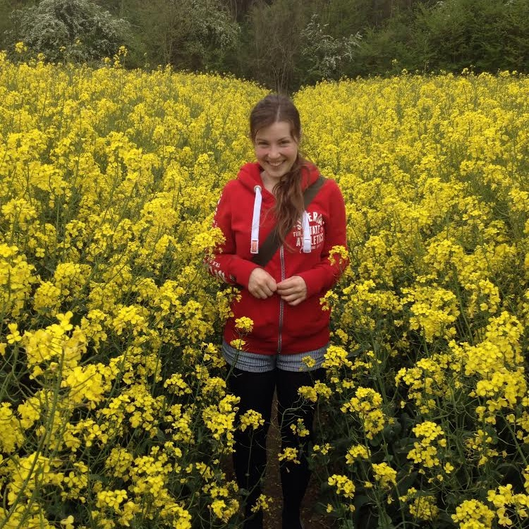

Hi I'm Steph I am a mathematician, entomologist, software developer, working on fun, technical, educational, and social challenges in Kenya. You can read more about my projects and interests by clicking on the links above, or find me on other sites by clicking on the links below.
